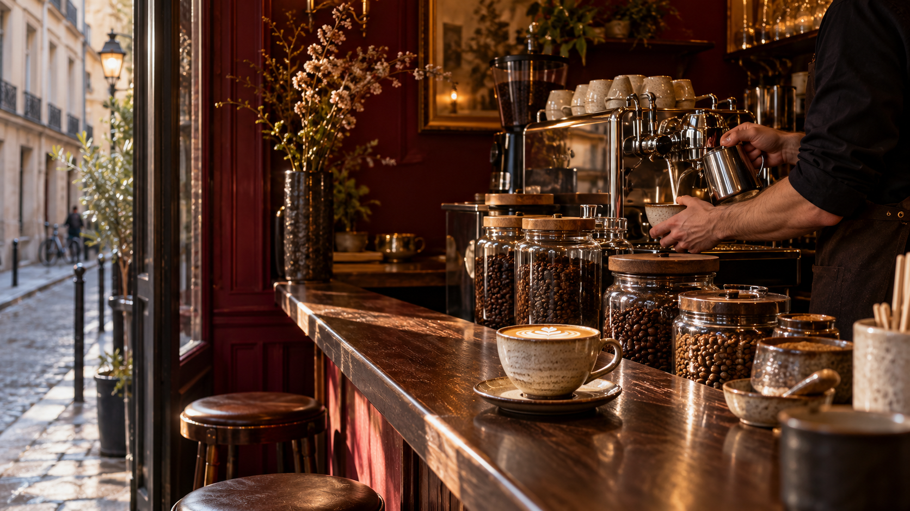

Flat white
Un espresso précis, enveloppé d’une mousse fine.
Un refuge intimiste où chaque grain a une histoire, chaque extraction une intention.
Découvrir la sélection
Un petit comptoir calme pour prendre le temps de parler origine, torréfaction et goût.
Saint Barista met la conversation au centre. On choisit son grain selon ses envies, puis on regarde le barista lui donner sa meilleure expression.